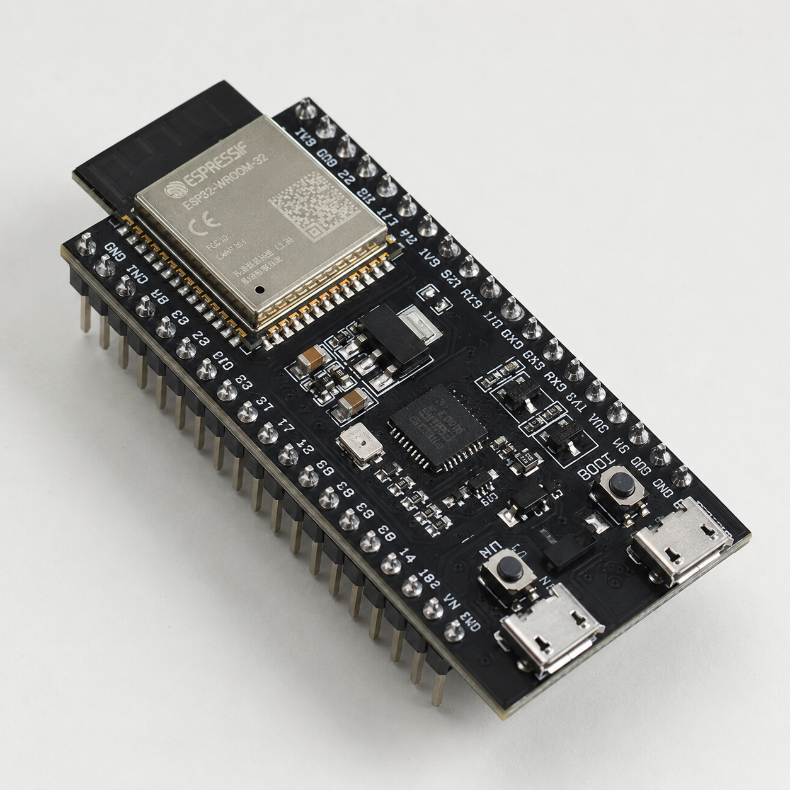

Colegios y universidades
Lleva una misión de ciencia y territorio a tu institución
Activa Deuterio o parte de un reto real de tu comunidad educativa, municipio o territorio.
Iniciativa social
Una iniciativa social, científica y educativa impulsada por Hidrógeno Verde Turquesa S.A.S., donde conocimiento, experimentación y territorio convergen para construir soluciones sostenibles.
Cultura, educación y territorio
La República del Hidrógeno articula formación, cultura energética y capacidades de experimentación para comunidades, estudiantes, investigadores, instituciones y aliados territoriales. Hoy esta iniciativa es impulsada por Hidrógeno Verde Turquesa S.A.S.
Creamos espacios de aprendizaje sobre hidrógeno, transición energética, bioeconomía y sostenibilidad para públicos técnicos y no técnicos.
Investigamos y formulamos pilotos que conectan energías limpias, bioeconomía, gestión ambiental y necesidades reales del territorio. Cuando una solución es viable, buscamos los aliados que pueden hacer posible su implementación.
Conocer IR MÁS ALLÁImpulsamos prácticas que regeneran territorio, fortalecen comunidades y promueven una relación más consciente con la energía y los recursos naturales.
Elige desde dónde llegas y encuentra una forma concreta de aportar
La iniciativa reúne aprendizaje, experimentación, retos territoriales, voluntariado y alianzas para convertir el interés en un siguiente paso claro.
Colegios y universidades
Activa Deuterio o parte de un reto real de tu comunidad educativa, municipio o territorio.
Empresas y organizaciones
Conversemos sobre pilotos, formación, investigación aplicada y capacidades que conecten propósito, equipo y territorio.
Personas que quieren participar
Elige una ruta de formación, participación experimental o voluntariado según lo que hoy quieres aportar.
Programa territorial
Una ruta para llevar capacidades educativas, científicas y experimentales de La República del Hidrógeno a lugares concretos, conectando conocimiento con necesidades reales del territorio.
Puede activarse con colegios, universidades, comunidades, municipios, organizaciones, empresas y otros territorios que necesiten acompañamiento para aprender, medir, experimentar o formular soluciones.
Para iniciar, cuéntanos el tipo de institución, a quiénes quieren vincular, el municipio y el reto o interés que desean trabajar.
Hablar sobre DeuterioCatálogo formativo y ruta progresiva
Una academia práctica para aprender desde cero: electrónica educativa, automatización, electrólisis, microbiología, fermentación oscura, reformado, aprovechamiento de orgánicos y aplicaciones del hidrógeno en el hogar y la movilidad.
 Curso principal
Curso principal
Ruta aplicada
Un recorrido progresivo para entender sensores, control, producción, uso eléctrico, uso térmico y bases de conversión supervisada hacia mezclas hidrógeno-combustible.
Solicitar acceso
Primeros proyectos con medición, patrones, tablas, gráficas y pensamiento lógico aplicado a sostenibilidad.

Lectura de variables, promedios, tendencias, conectividad WiFi y tablero básico para prototipos energéticos.

Principios, medición, conversiones de unidades, ventilación, secado de gas y límites de experimentación responsable.

Manejo de orgánicos, bioseguridad, balances simples, fermentación oscura y rutas biológicas de energía.
Enfoque STEAM transversal
Los cursos conectan ciencia, tecnología, ingeniería, artes y matemáticas para pasar de una pregunta del territorio a una solución que se pueda probar, explicar y mejorar.
La ruta está pensada para avanzar por módulos, desde cultura científica, matemáticas aplicadas y electrónica básica hasta automatización, producción de hidrógeno, bioenergía y aplicaciones en vivienda y movilidad.
Los cursos se publicarán en Vimeo para mantener calidad de video. La iniciativa puede entregar constancias de participación a quienes completen la ruta según el alcance de cada proceso. Los módulos de hidrógeno vehicular se manejarán como formación conceptual y práctica supervisada, con énfasis en normativa, riesgos, ventilación, presión, combustión y protección eléctrica.
Mientras Hidrógeno Verde Turquesa S.A.S. trabaja en investigación, formulación y desarrollo de proyectos, La República del Hidrógeno fortalece la dimensión educativa, social y cultural del ecosistema. Esta conexión permite que la tecnología no se quede solo en laboratorios o documentos, sino que llegue a comunidades, instituciones y territorios.
Su trabajo se enfoca en talleres, semilleros, alianzas académicas, pilotos comunitarios, divulgación científica y formación de capacidades para una transición energética más incluyente.
La iniciativa combina exploración ciudadana, capacidades institucionales e investigación aplicada para que un reto pueda convertirse en un piloto con aliados, recursos y responsabilidades claras.
Acceso a herramientas, fuentes, diseño experimental y casos aplicados para convertir preguntas en metodologías, mediciones y prototipos verificables.
Entrar al laboratorioOrientación para navegar mejor el ecosistema HVT, identificar rutas de aprendizaje, ubicar contenidos y traducir necesidades en siguientes pasos concretos.
Abrir Mentor desde el laboratorioVínculos con instituciones educativas, organizaciones, empresas y actores públicos. HVT formula e investiga; las alianzas aportan las capacidades y recursos necesarios para activar un piloto.
Proponer una alianzaUn piloto puede requerir recursos, equipos, permisos, formación o acompañamiento territorial. Conectamos esos aportes con retos que ya han sido investigados y formulados.
Aportar recursos o capacidadesSi quieres aprender, participar en ciencia, proponer un reto, activar Deuterio en el territorio, postular una organización de cuidado animal o construir una alianza, podemos conversar.
Escribir por WhatsApp